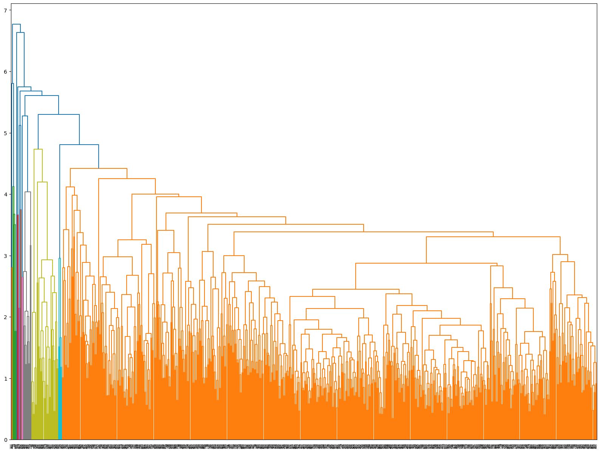
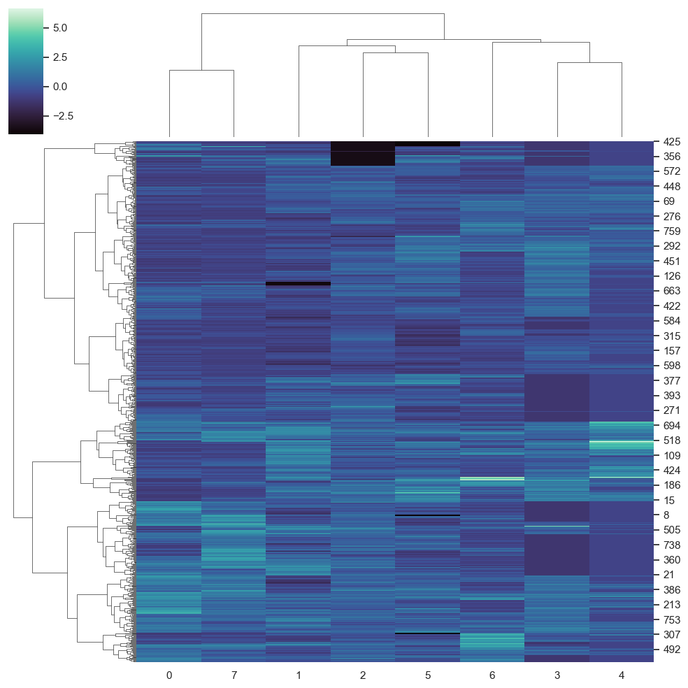

from sklearn.preprocessing import StandardScalerfrom scipy.cluster import hierarchyimport matplotlib.pyplot as plty=data['class']X=data.iloc[:,0:8]scaler = StandardScaler()scaler.fit(X)StandardScaler(copy=True, with_mean=True, with_std=True)X= scaler.transform(X)#dist2=pairwise_distances(X)Z = hierarchy.linkage(X,'average')plt.figure(figsize=(20,15))dn = hierarchy.dendrogram(Z)

import seaborn as snssns.set(color_codes=True)g = sns.clustermap(X, cmap="mako",method='ward')

from sklearn.cluster import AgglomerativeClusteringfrom sklearn.metrics import pairwise_distancesimport numpy as npn_clusters =2model = AgglomerativeClustering(n_clusters=n_clusters,linkage="average")model.fit(X)clustlabels=model.fit_predict(X)unique_elements, counts_elements = np.unique(clustlabels, return_counts=True)print("Size of the two clusters")print(np.asarray((unique_elements, counts_elements)))
Size of the two clusters
[[ 0 1]
[760 7]]
pd.crosstab(clustlabels,y)
class
0
1
row_0
0
498
262
1
2
5
model = AgglomerativeClustering(n_clusters=n_clusters,linkage="ward")model.fit(X)clustlabels=model.fit_predict(X)unique_elements, counts_elements = np.unique(clustlabels, return_counts=True)print("Size of gthe two clusters")print(np.asarray((unique_elements, counts_elements)))
C:\Users\USUARIO\anaconda3\lib\site-packages\sklearn\cluster\_agglomerative.py:983: FutureWarning: Attribute `affinity` was deprecated in version 1.2 and will be removed in 1.4. Use `metric` instead
warnings.warn(
C:\Users\USUARIO\anaconda3\lib\site-packages\sklearn\cluster\_agglomerative.py:983: FutureWarning: Attribute `affinity` was deprecated in version 1.2 and will be removed in 1.4. Use `metric` instead
warnings.warn(
C:\Users\USUARIO\anaconda3\lib\site-packages\sklearn\cluster\_agglomerative.py:983: FutureWarning: Attribute `affinity` was deprecated in version 1.2 and will be removed in 1.4. Use `metric` instead
warnings.warn(